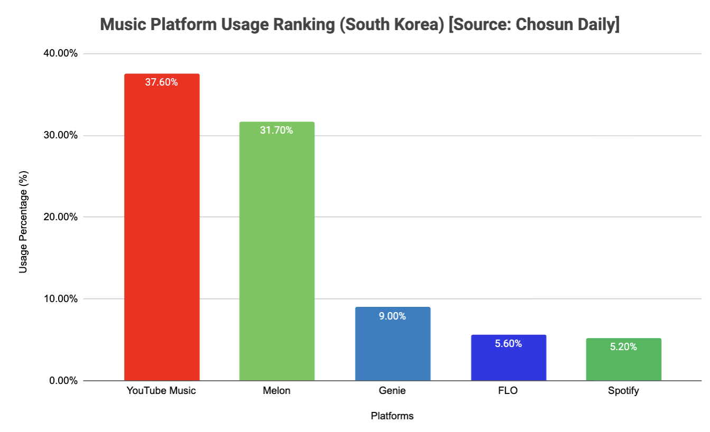

Winning in a Fragmented Market: How Spotify Becomes the Most Meaningful Listening Home
Coming from Korea and observing the daily habits of my peers, I realized a striking divide: there is no "default" music home in Korea.
When I polled a group chat of friends back home, the responses were scattered: "Melon," "YouTube Music," "Apple Music," "Spotify." Coming to college in the U.S., where Spotify is the unquestioned social default, this contrast intrigued me. Why is the world’s leading audio platform a "secondary choice" in one of the world's most vibrant music markets?
This case study explores the structural and cultural reasons for this fragmentation and diagnoses how Spotify can strategically position itself to move from a "niche preference" to a "market winner."
Unlike the U.S. duopoly of Spotify and Apple Music, the Korean market is split across local incumbents and global giants. Recent Wiseapp data shows YouTube Music leading in MAU (Monthly Active Users) due to YouTube Premium bundling, followed closely by Melon, with Spotify and others holding smaller, specialized shares. This "multi-homing" behavior suggests that users haven't found a single platform that satisfies all their "Jobs to be Done."

Source context: Chosun Daily 2026 [Source].
Why people choose Spotify: It is the global gold standard for Discovery Rituals. Its algorithmic moat (Discover Weekly, Daily Mix) turns listening into a data-driven mirror of the user's identity.
Why Spotify is used less in Korea:
Top-Down (Charts)
"I listen to what everyone else is listening to." (Passive, collective)
Bottom-Up (Discovery)
"The algorithm finds what is uniquely for me." (Active, individual)
By reviewing Spotify’s Investor Relations (IR) filings and 2024-2025 growth reports, I’ve analyzed the unit economics of the Korea entry:
Winning in Korea requires solving Cultural Tensions, not just launching features. I have identified three key diagnosis points:
Diagnosis: In Korea, music is a social signal. Spotify treats music as a private experience, but Korean users prioritize how their taste looks on their "digital profile" (KakaoTalk, Instagram).
Opportunity: Move Spotify from a "Listening Tool" to a "Digital Identity Badge" that integrates seamlessly with local social ecosystems.
Diagnosis: Spotify’s algorithm requires time to learn a user. Korea’s Pali-Pali culture demands immediate relevance. If the first 3 songs on a "Daily Mix" don't hit, the user switches to a Top 100 Chart.
Opportunity: Hyper-contextual, "Zero-Day" curation that matches the physical speed of Korean urban life (e.g., specific transit-route playlists).
Diagnosis: Spotify is often viewed as a "Western Global Player." It needs to be seen as "The Window to the World" for Korean culture.
Opportunity: Repositioning the brand narrative around National Pride—showing how Spotify’s global scale helps Korean artists trend in London, NYC, and Paris.
To move the needle in a fragmented market, success should be measured by Habituation and Sentiment:
| Metric | Strategic Goal |
|---|---|
| First-Open Rate | Becoming the "morning commute" default. |
| Social Share-of-Voice | Measuring Spotify's presence on KakaoTalk/Instagram profiles. |
| Free-to-Premium Velocity | How quickly the "Discovery Habit" turns into a paying habit. |
The winner in Korea won't be the app with the most songs, but the app that understands the daily rhythm and identity of the Korean listener.